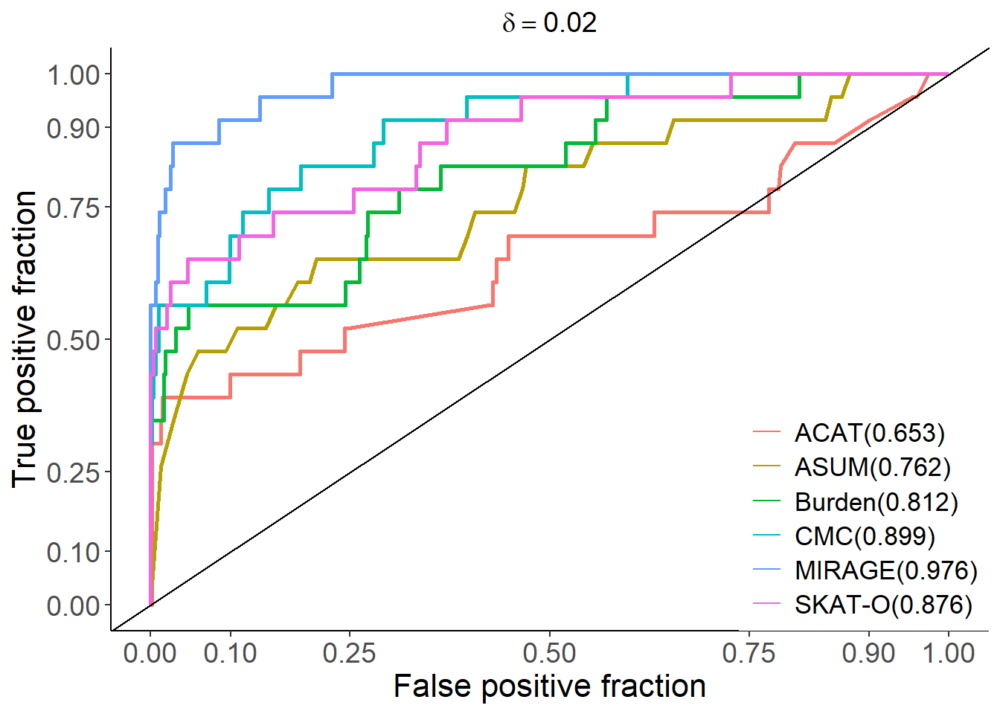
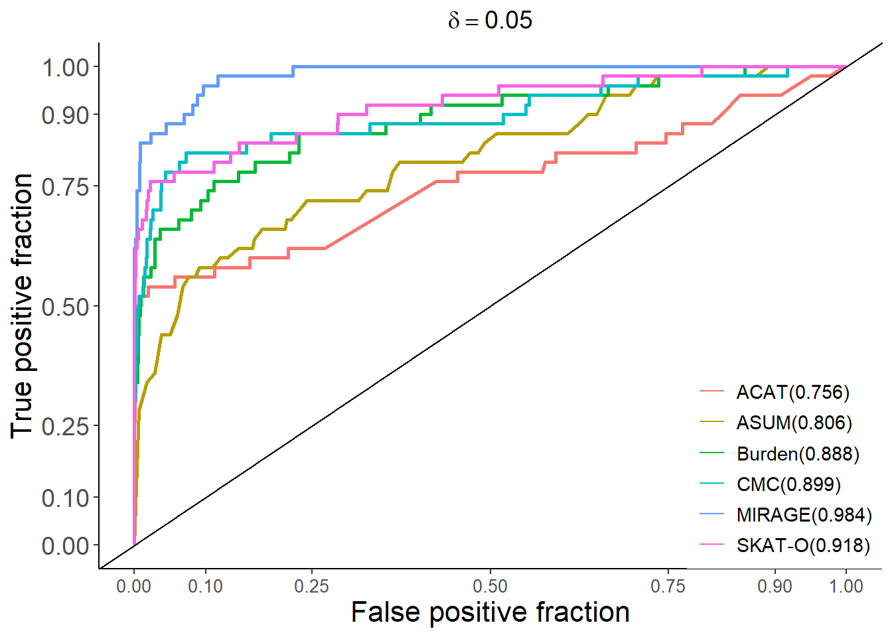
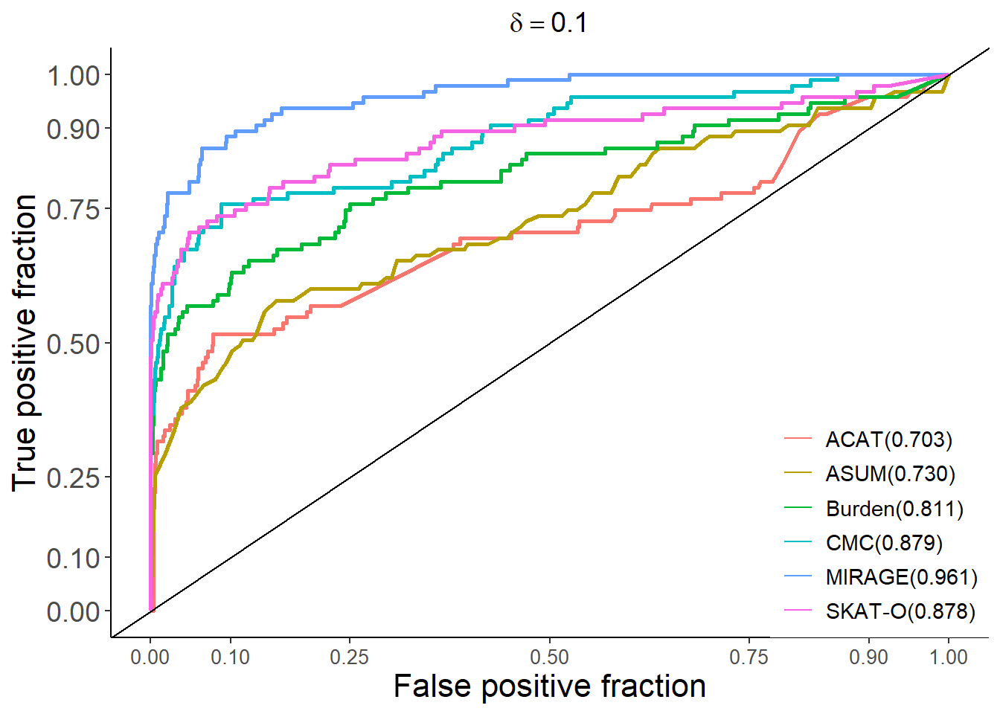
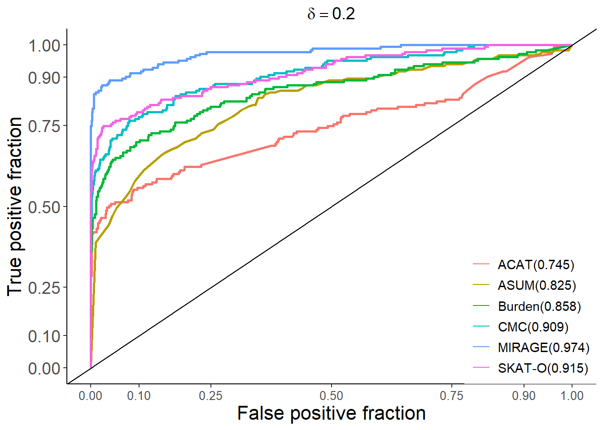
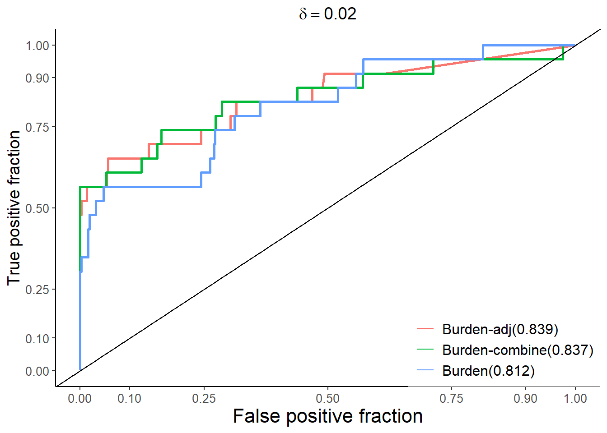
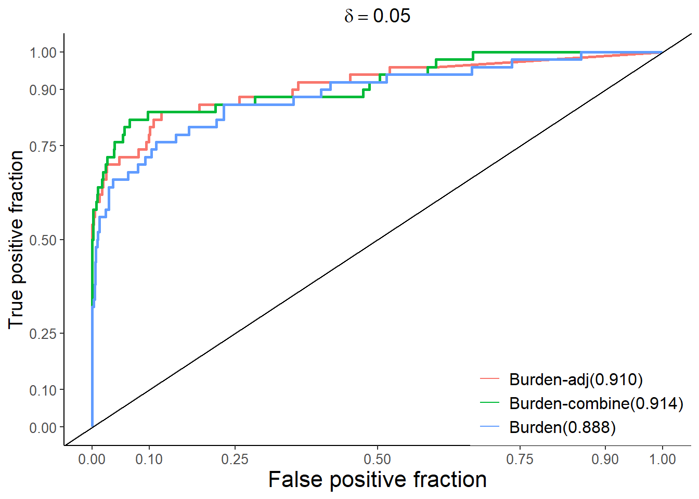
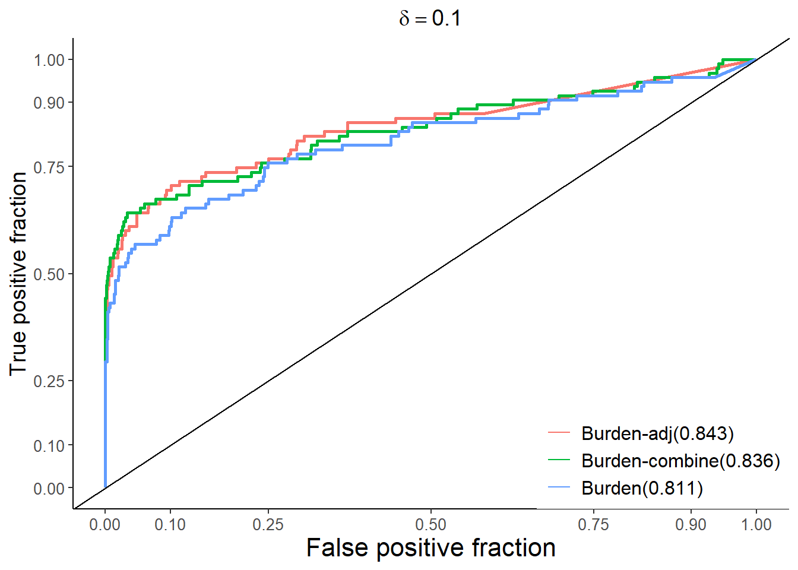
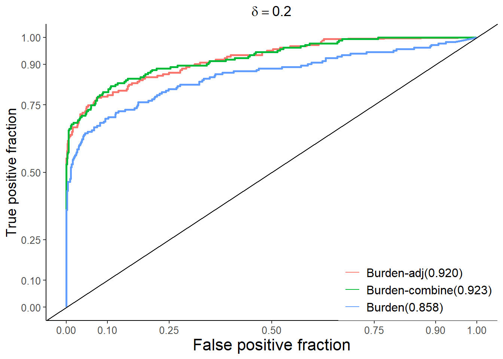
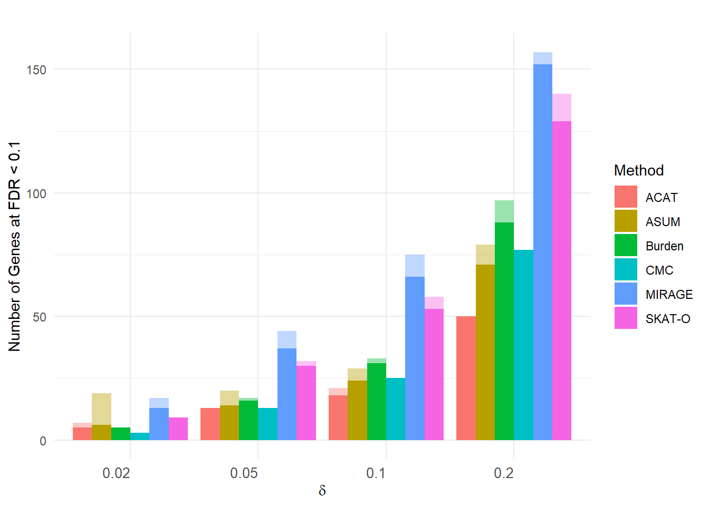

path="C:/Shengtong/Research/rare-var/RareVariant/AJHG submisson/round1 revision/AdditionalSimulations/RandomNumberVariants/"
delta=c(0.02, 0.05, 0.1, 0.2)
rep_use_index=c(3,2,1,3)
p_delta=list()
p_delta_burden=list()
AUC=list(
"0.02"=c("Burden(0.812)", "SKAT-O(0.876)", "MIRAGE(0.976)", "CMC(0.899)", "ASUM(0.762)", "ACAT(0.653)"),
"0.05"=c( "Burden(0.888)", "SKAT-O(0.918)", "MIRAGE(0.984)", "CMC(0.899)", "ASUM(0.806)", "ACAT(0.756)"),
"0.1"=c("Burden(0.811)", "SKAT-O(0.878)", "MIRAGE(0.961)", "CMC(0.879)", "ASUM(0.730)", "ACAT(0.703)"),
"0.2"=c( "Burden(0.858)", "SKAT-O(0.915)", "MIRAGE(0.974)", "CMC(0.909)", "ASUM(0.825)", "ACAT(0.745)"))
AUC_burden=list(
"0.02"=c("Burden(0.812)", "Burden-adj(0.839)", "Burden-combine(0.837)"),
"0.05"=c("Burden(0.888)", "Burden-adj(0.910)", "Burden-combine(0.914)"),
"0.1"=c("Burden(0.811)", "Burden-adj(0.843)", "Burden-combine(0.836)"),
"0.2"=c( "Burden(0.858)", "Burden-adj(0.920)", "Burden-combine(0.923)"))
for (i in 1:length(rep_use_index))
{
rm("Ui", "mirage_pvalue", "mirage_BF", "fisher_pvalue", "skato_pvalue", "cmc_pvalue", "asum_pvalue", "acat.pvalue", "fisher.separate.pvalue")
load(paste0(path, "7methods_delta", delta[i], "_MAC_threshold10.gammamean335_5rep.RData"))
Ui=Gene.Risk.Status[[rep_use_index[i]]]
mirage_pvalue=MIRAGE.pvalue[[rep_use_index[i]]]
mirage_BF=MIRAGE.BF[[rep_use_index[i]]]
fisher_pvalue=Fisher.pvalue[[rep_use_index[i]]]
skato_pvalue=SKATO.pvalue[[rep_use_index[i]]]
cmc_pvalue=CMC.pvalue[[rep_use_index[i]]]
asum_pvalue=ASUM.pvalue[[rep_use_index[i]]]
fisher.separate.pvalue=Fisher.separate.pvalue[[rep_use_index[i]]]
acat.pvalue=ACAT.pvalue[[rep_use_index[i]]]
fisher.adj.pvalue=numeric()
fisher.combine.pvalue=numeric()
for (ii in 1:nrow(fisher.separate.pvalue))
{
fisher.adj.pvalue[ii]=min(p.adjust(fisher.separate.pvalue[ii,], method = "bonferroni", n = length(fisher.separate.pvalue[ii,])))
fisher.combine.pvalue[ii]=pchisq(-sum(log(fisher.separate.pvalue[ii,])), df=6, ncp = 0, lower.tail = TRUE)
}
# fisher.adj.pvalue[i]=min(fisher.separate.pvalue[i,])
num_run=length(mirage_pvalue)
method=rep(AUC[[ as.character(delta[i]) ]], each=num_run) # AUC is from round(calc_auc(p1.basic)$AUC, 2)
roc_single_run=data.frame(D=Ui, m=c(fisher_pvalue,skato_pvalue, -mirage_BF, cmc_pvalue, asum_pvalue, acat.pvalue), method=method)
p1.basic=ggplot(roc_single_run, aes(d = D, m = m, color=method), size=2) +
geom_roc(increasing=F, n.cuts=0)+
style_roc(theme = theme_grey)
##################### Xiaotong's code
p_delta[[i]]=p1.basic+
ggtitle(bquote(delta == .(delta[i])))+
theme_classic() +
theme(
plot.title = element_text(hjust = 0.5, size = 14),
axis.text.x = element_text(size = 10),
axis.text.y = element_text(size = 14),
axis.title.y = element_text(size = 16),
axis.title.x = element_text(size = 16),
legend.title = element_blank(),
legend.justification = c(1, 0),
legend.position = c(1, 0),
legend.text = element_text(size = 11)
) +
geom_abline(intercept = 0, slope = 1, col = "black")
################## comparison among three burden p values ##########
method=rep(AUC_burden[[ as.character(delta[i]) ]], each=num_run)
roc_single_run_burden=data.frame(D=Ui, m=c(fisher_pvalue, fisher.adj.pvalue, -fisher.combine.pvalue), method=method)
p.basic_burden=ggplot(roc_single_run_burden, aes(d = D, m = m, color=method), size=2) +
geom_roc(increasing=F, n.cuts=0, labels=F)+
style_roc(theme = theme_grey)
p_delta_burden[[i]]=p.basic_burden+
ggtitle(bquote(delta == .(delta[i])))+
theme_classic() +
theme(
plot.title = element_text(hjust = 0.5, size = 14),
axis.text.x = element_text(size = 10),
axis.text.y = element_text(size = 10),
axis.title.y = element_text(size = 14),
axis.title.x = element_text(size = 16),
legend.title = element_blank(),
legend.justification = c(1, 0),
legend.position = c(1, 0),
legend.text = element_text(size = 12)
) +
geom_abline(intercept = 0, slope = 1, col = "black")
} # end of #for (i in 1:5)
p_delta## [[1]]
##
## [[2]]
##
## [[3]]
##
## [[4]]
p_delta_burden## [[1]]
##
## [[2]]
##
## [[3]]
##
## [[4]]
#p1_delta0.02
#round(calc_auc(p1.basic)$AUC, 4)#all <- grid.arrange(p1_delta[["delta-0.02"]], p1_delta[["delta-0.1"]], nrow=1)
all <- grid.arrange(p1_delta0.02, p1_delta0.1, nrow=1)
ggsave(all,filename = paste0("C:/Shengtong/Research/rare-var/RareVariant/AJHG submisson/round1 revision/AdditionalSimulations/RandomNumberVariants/fig2.roc.delta00201_rep",selected_rep,".pdf"),width = 8,height = 4,dpi = 600)
all <- grid.arrange(p2_delta0.05, p_delta0.2, nrow=1)
ggsave(all,filename = paste0("C:/Shengtong/Research/rare-var/RareVariant/AJHG submisson/round1 revision/AdditionalSimulations/RandomNumberVariants/fig2.roc.delta00502_rep",selected_rep,".pdf"),width = 8,height = 4,dpi = 600)all <- grid.arrange(p_delta0.02_burden, p_delta0.05_burden, p_delta0.1_burden, p_delta0.2_burden, nrow=2)
ggsave(all,filename = paste0("C:/Shengtong/Research/rare-var/RareVariant/AJHG submisson/round1 revision/AdditionalSimulations/RandomNumberVariants/ROCs of several variations of burden test.pdf"),width = 8,height = 9,dpi = 600)library(reshape)
library(ggplot2)
#setwd("/project2/xinhe/xsun/rare_variants/4.additional_analysis")
folder_data <- "C:/Shengtong/Research/rare-var/RareVariant/AJHG submisson/round1 revision/AdditionalSimulations/RandomNumberVariants/"
delta_all <- c(0.02,0.05,0.1,0.2)
index_all <- c(3,2,1,3)
df_tp <- c()
df_fp <- c()
for (i in 1:length(delta_all)) {
file <- paste0(folder_data,"7methods_delta",delta_all[i],"_MAC_threshold10.gammamean335_5rep.RData")
load(file)
index <- index_all[i]
gene_status <- Gene.Risk.Status[[index]]
names(gene_status) <- seq(1:length(gene_status))
mirage_BF <- MIRAGE.BF[[index]]
names(mirage_BF) <- seq(1:length(mirage_BF))
mirage_BF <- mirage_BF[order(mirage_BF, decreasing = T)]
mirage_PP <- 0.05*mirage_BF/(1-0.05 + 0.05*mirage_BF)
#mirage_PP <- mirage_PP[order(mirage_PP, decreasing = T)]
PP_null <- 1 - mirage_PP
mirage_FDR <- cumsum(PP_null)/(1:length(mirage_BF))
fisher_pvalue <- Fisher.pvalue[[index]]
#fisher_FDR <- p.adjust(fisher_pvalue, method = "bonferroni")
fisher_FDR <- p.adjust(fisher_pvalue, method = "fdr")
skato_pvalue <- SKATO.pvalue[[index]]
#skato_FDR <- p.adjust(skato_pvalue, method = "bonferroni")
skato_FDR <- p.adjust(skato_pvalue, method = "fdr")
cmc_pvalue <- CMC.pvalue[[index]]
#cmc_FDR <- p.adjust(cmc_pvalue, method = "bonferroni")
cmc_FDR <- p.adjust(cmc_pvalue, method = "fdr")
asum_pvalue <- ASUM.pvalue[[index]]
#asum_FDR <- p.adjust(asum_pvalue, method = "bonferroni")
asum_FDR <- p.adjust(asum_pvalue, method = "fdr")
acat_pvalue <- ACAT.pvalue[[index]]
#acat_FDR <- p.adjust(acat_pvalue, method = "bonferroni")
acat_FDR <- p.adjust(acat_pvalue, method = "fdr")
fdr_cutoff2 <- 0.1
mirage_positive <- (mirage_FDR < fdr_cutoff2)
positive_name <- names(mirage_positive)[mirage_positive]
real_status <- gene_status[positive_name]
mirage_TP <- sum(real_status)
mirage_FP <- sum(real_status == 0)
acat_TP <- sum(acat_FDR < fdr_cutoff2 & gene_status == 1)
acat_FP <- sum(acat_FDR < fdr_cutoff2 & gene_status == 0)
asum_TP <- sum(asum_FDR < fdr_cutoff2 & gene_status == 1)
asum_FP <- sum(asum_FDR < fdr_cutoff2 & gene_status == 0)
fisher_TP <- sum(fisher_FDR < fdr_cutoff2 & gene_status == 1)
fisher_FP <- sum(fisher_FDR < fdr_cutoff2 & gene_status == 0)
cmc_TP <- sum(cmc_FDR < fdr_cutoff2 & gene_status == 1)
cmc_FP <- sum(cmc_FDR < fdr_cutoff2 & gene_status == 0)
skato_TP <- sum(skato_FDR < fdr_cutoff2 & gene_status == 1)
skato_FP <- sum(skato_FDR < fdr_cutoff2 & gene_status == 0)
df01 <- c(acat_TP,asum_TP,fisher_TP,cmc_TP, mirage_TP,skato_TP)
df01_FP <- c(acat_FP,asum_FP,fisher_FP,cmc_FP, mirage_FP,skato_FP)
df_tp <- cbind(df_tp,df01)
df_fp <- cbind(df_fp,df01_FP)
}
df_tp <- as.data.frame(df_tp)
rownames(df_tp) <- c("ACAT","ASUM","Burden","CMC","MIRAGE","SKAT-O")
colnames(df_tp) <-c("0.02","0.05","0.1","0.2")
#colnames(df_tp) <-c("delta0.02FDR0.2","delta0.02FDR0.3","delta0.1FDR0.2","delta0.1FDR0.3","delta0.05FDR0.2","delta0.05FDR0.3","delta0.2FDR0.2","delta0.2FDR0.3")
df_tp$Method <- c("ACAT","ASUM","Burden","CMC","MIRAGE","SKAT-O")
df_fp <- as.data.frame(df_fp)
rownames(df_fp) <- c("ACAT","ASUM","Burden","CMC","MIRAGE","SKAT-O")
colnames(df_fp) <-c("0.02","0.05","0.1","0.2")
#colnames(df_fp) <-c("delta0.02FDR0.2","delta0.02FDR0.3","delta0.1FDR0.2","delta0.1FDR0.3","delta0.05FDR0.2","delta0.05FDR0.3","delta0.2FDR0.2","delta0.2FDR0.3")
df_fp$Method <- c("ACAT","ASUM","Burden","CMC","MIRAGE","SKAT-O")
df_tp_melt <- melt(df_tp, id.vars = "Method", variable.name = "Group", value.name = "TP_Value")
df_fp_melt <- melt(df_fp, id.vars = "Method", variable.name = "Group", value.name = "FP_Value")
# Merging true positive and false positive data
df_combined <- merge(df_tp_melt, df_fp_melt, by = c("Method", "variable"))
colnames(df_combined) <- c("Method","Group","TP_Value","FP_Value")
p <- ggplot(df_combined, aes(x = Group, fill = Method)) +
# True positive bars (colored foreground)
geom_bar(aes(y = TP_Value), stat = "identity", position = position_dodge()) +
# False positive bars (stacked on top of true positives, lighter color)
geom_bar(aes(y = TP_Value + FP_Value, fill = Method),
stat = "identity", position = position_dodge(), alpha = 0.4) +
theme_minimal() +
labs(
title = "",
x = expression(delta),
y = "Number of Genes at FDR < 0.1"
) +
theme(axis.text.x = element_text(angle = 0, hjust = 1, size=10))
p
This R Markdown site was created with workflowr